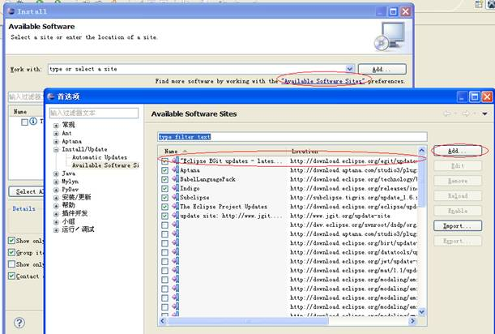
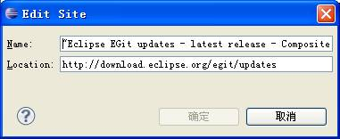
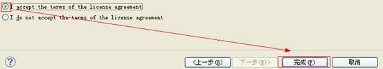
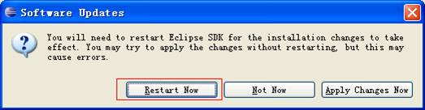

点击可用的软件升级地址(Available Softwares Sites)，在弹出的对话框点击增加(Add)，注意这里的地址不能重复添加，所以要先检查是否已经添加了(最新版的Eclipse 自带了这个地址)。
GIT 插件的更新地址: http://download.eclipse.org/egit/updates


在 当前位置(Work with)选择 GIT 更新的位置，稍等后，会列出全部可用的插件。下图中打钩的表示必备的插件，其它是可选项。如果不确定需要哪些项目，可以全选。

需要同意协议(I acceptthe terms of the liscense agreement), 然后可以继续。

安装的时候肯能会提示是否同意未签名的插件 或是否 验证通过签名 的对话框， 选择确定即可。
安装完后回询问是否重启软件。点击马上重启( Restart Now) 。

点击 文件(File)/导入(Import) , 可以找到 Git 项。 表示安装成功。